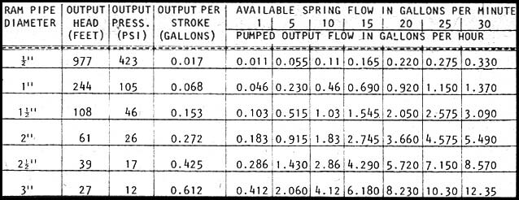

Charles Bertram-in his letter on page 156 of MOTHER NO. 38asked if anyone knows of a way he can lift water from a small spring to a trickle irrigation tank for apple trees situated 65 feet higher up a slope.
Perhaps the float-pumpwhich fills a niche between the familiar hydraulic ram (that MOTHER has featured several times in the past and that requires a swift stream for its operation) and the waterwheel (which MOTHER has also featured and which must have several feet of fall)is just what Mr. Bertram needs. This handy-dandy little device combines pump and prime mover into one assembly . . . and can operate on as little as six inches of head!
I'm not really sure of the float-pump's origin, although I think it was developed around the turn of the century. I first ran across the idea when I was told about one of the units that had been installed near Walton (north of Lexington), Kentucky. As a result, I sat down and designed the pump you see here "from scratch" with the typical semiskilled back-to-the-lander in mind.
No, this probably is not the way I'll build one of these little rigs for my own farm (since I own a fairly elaborate machine shop and research lab). But the one shown here should work, and should be fairly easy to build.
The largest component (the casing) of this pump is a 55-gallon drum with a removable head. Such a barrel-which is easy to obtain at low cost almost any place in the worldestablishes the maximum usable head of the finished float-pump at approximately 2.5 feet of water. The largest float that we can reasonably expect to use in such a casing will have a diameter of 20 inches, and I've chosen to make that float ten inches in height (see drawing).
(The pump's float, as I'm sure you realize, should come as close to completely filling the inside of its casing as possible . . . without actually contacting the barrel's wall. Too much clearance simply wastes water without improving either output pressure or flow. Too little can cause the float to "hang up" and slow or completely stop the pump's action.)
Since the float doesn't actually wear against its casing, it canfor the most partbe made of fairly fragile materials. Consider a block of styrofoam (which can be worked with a saw, knife, or even a hot wire!) sandwiched between top and bottom plates of aluminum or steel. The entire assembly can then be painted with melted paraffin to decrease its absorption of water and, thereby, improve its buoyancy.
I've specified a pump of the so-called "ram" design for installation on this float because of its low cost and simplicity. The only parts of the assembly that you should have to take to a machine shop for precision finishing are the seal plate and the ram pipe. (The outside diameter of the ram pipe should be turned and polished and the hole in the seal plate through which the ram pipe slides should be bored with some precision. Perhaps most critical of all, however, is the machining of the groove for the O-ring seal.) And while you're at the machine shop, you might as well have the check valve seat made up and welded into the bottom of the ram pipe. All the other parts of this float-pump can be fabricated by a handyman in any good home shop.
The rather unusual cylinder arrangement shown in the accompanying drawing was chosen for its utter simplicity. The cylinder pipe itself (which may be anything from one inch to four inches in diameter: three inches is a good compromise) needs no internal machining, since the ram pipe that fits inside does not rub against the cylinder pipe's wall. And the ram itself, which does require machining and polishing, requires this work only on its external surfaces (which makes the job easy to handle on almost any small shop lathe). The Oring seal, of course, was chosen over a score of alternatives because it seals well on both the pumping and suction strokes and because it requires the very simplest of installation mounting (just a groove).
Note, too, the open top of the ram pipe (where, if you're at all familiar with the design of pumps, you'd expect to find a solid piston face) and the outlet or discharge check valve which caps the cylinder pipe. This arrangement makes it virtually impossible for air to become trapped inside the cylinder for more than one stroke of the ram. This is, in other words, a very trouble-free self-purging design.
The "input/drain valve assembly" of this pumpwhile critical to the proper operation of the unithas been designed for relatively easy down-home construction by anyone with passable carpentry skills. The special "pinch valve" is nothing but a couple of sections of old bicycle inner tube, 3/16" or 1/4" rod bent to the shape shown, and an ordinary screen door spring. As laid out, the valve will tend to stall the float's travel enough to allow it to build up excess buoyancy (during the pumping stroke) or excess dead weight (during the drain stroke) so that the valve will hold its position longer and then snap faster when it does move.
At least a thousand other valve designs will work (including the flush mechanism taken right off a toilet and put on the pump shown here to operate its drain). This particular setup was chosen because it's simple, inexpensive, and all its working parts are outside the drum . . . where they can be checked and replaced as necessary without disassembling the entire pump.
The maximum gross buoyancy of the float specified herewith the float completely submergedshould be about 113 pounds. If we assume a typical weight of 30 pounds for the float assembly, that leaves us with a net buoyancy of 83 pounds.
This force can be used to produce either a high pressure and low flow of water, or a lower pressure coupled with a higher flow . . . depending on the size of the ram employed. For example: If you build the pump exactly as shown and install a ram pipe (and matching seal plate) that is one-half inch in diameter, the unit will deliver 0.017 gallon per stroke at a hydraulic head of 977 feet (423 psi). Again, however, if you build the pump as shown and install a ram pipe (and matching seal plate) that is three inches in diameter, the machine will deliver 0.612 gallon per stroke at a 27-foot head (11.7 psi).
The accompanying chart illustrates this trade-off in greater detail. It also tells you how much water six different versions of the unit will pump per minute when driven by springs with seven different rates of flow. Remember, of course, that the values on the chart hold true only for the float design and dimensions shown.
The pump shown on these pages is non-critical, in that it adjusts automatically to any needed output head (up to, of course, its design limit). When extra output pressure is needed, the water will simply rise higher in the space between the float and its surrounding drum . . . and the resulting extra buoyancy will produce the additional "push" that is required.
As an added bonus, this unit operates without external power, is not dependent on uncertain winds or solar fall, and works around the clock unattended. Andif you have access to a good junkyard and know a sharp machinistthe total parts and machining for the pump should not exceed $30 to $50.
Nor are you strictly limited to the exact design shown here. The basic principle can be widely modified. You might, for example, want to adapt it for use on a flat creek or very-low-head spring by building a wooden or concrete box that is quite broad and wide and which contains a "float" that is nothing but a nesting box an inch `or so less broad and less wide than the outside "casing". In such a case the "stroke" would be a matter of only a few inches and the valves could be toilet flush valves, sluice gates, ball valves, orof coursethe "snap action" design shown here. (And you can, of course, get that same action with small magnets, etc., instead of the overcentering screen door spring specified in the accompanying drawing.)
But make no mistake: This pump is not at all suitable as a single source of water for most homesteads under most conditions. Its output is just too small. For Mr. Bertramor anyone else wanting a steady source of water for trickle irrigation or a supplement to a homestead's main supply of water, howeverthe float-pump is ideal. It can even be used most of the winter when enclosed in a compact pump house (even a "soddy"), since water coming right out of the ground contains enough of the earth's heat to maintain a temperature of more than 32° F inside the little building.
|
|
|
|
|
|
 |
|